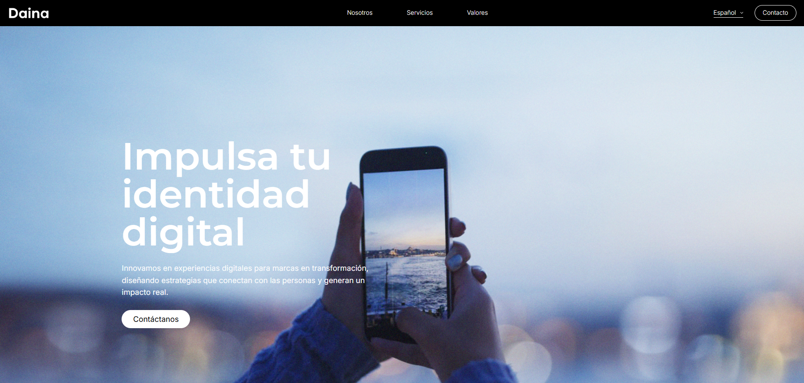
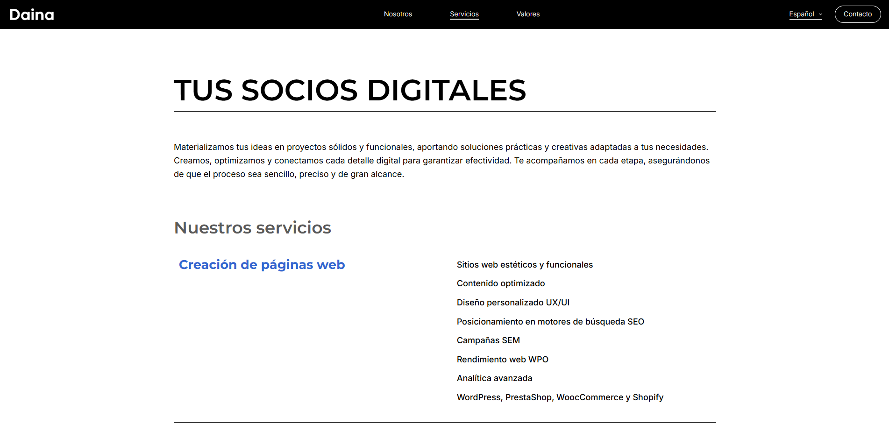
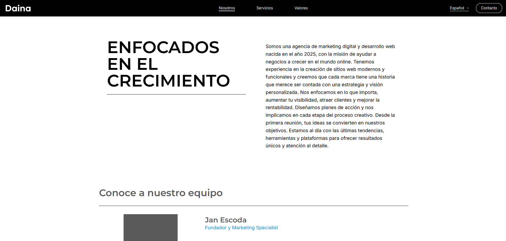
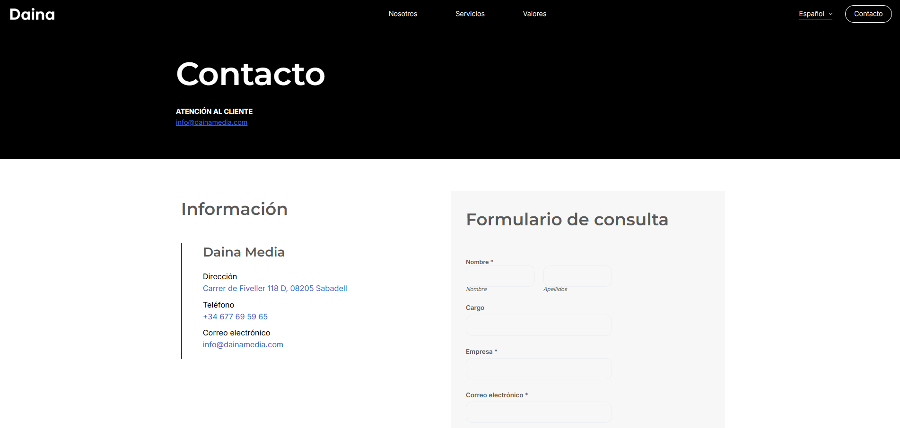
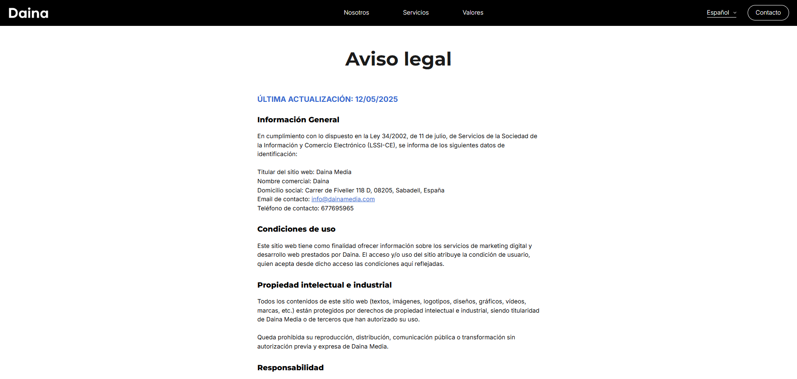

Diseño del sitio web






Proyecto desarrollado como Trabajo Final de Máster en Estrategia y Creatividad en Publicidad (UOC), centrado en la creación y lanzamiento real de una agencia de marketing digital: Daina Media. El trabajo combina investigación estratégica, branding, diseño y puesta en marcha de los canales digitales de la marca.
Daina Media es una agencia de marketing digital creada como proyecto de máster, con un enfoque totalmente aplicado: pasar de la teoría a un caso real. El proyecto parte de un análisis del contexto económico, del sector digital y de las necesidades de pymes y profesionales, para plantear una agencia especializada en acompañar a pequeños negocios en su transición al entorno online【14-0】【14-2】.
Más allá de un plan de empresa teórico, el trabajo se centra en construir una marca viable y lanzar sus primeros activos: naming, identidad visual, sitio web, presencia en redes y una campaña inicial de contenidos. El objetivo es ofrecer servicios accesibles y cercanos en branding, diseño web y estrategia digital, pensados para personas y proyectos que necesitan apoyo profesional pero no disponen de grandes recursos【14-2】【14-16】.
La estrategia se articula a partir de herramientas como DAFO, benchmarking y el modelo Canvas, definiendo segmentos de clientes, propuesta de valor, canales y estructura de costes de la agencia【14-3】【14-16】. Se trabaja un posicionamiento muy claro: una agencia cercana, ágil y creativa, especializada en marcas pequeñas con alma que valoran la autenticidad y el diseño.
A nivel de branding se definen propósito, misión, visión y personalidad de la marca. Daina nace de un naming en catalán que significa “ciervo”, símbolo de agilidad y elegancia, reforzando valores de movimiento estratégico y conexión con el territorio. La identidad visual se construye sobre una paleta de blancos, negros y azules, con tipografías sans serif y una estética minimalista, profesional y muy digital【14-20】【14-21】.
Uno de los resultados clave del proyecto es la creación del sitio web dainamedia.com, desarrollado en WordPress con dominio y hosting propios. La web funciona como eje central de la marca, con secciones de “Nosotros”, “Servicios”, “Valores” y “Contacto”, disponibles en tres idiomas (español, catalán e inglés), y diseñada con una estética minimalista muy cuidada, alineada con la identidad visual de la agencia【14-22】【14-23】.
El plan se completa con la puesta en marcha de perfiles en LinkedIn, Instagram y Facebook. Para cada red se define un tono y una línea gráfica específicos: más corporativa y técnica en LinkedIn, y más emocional y visual en Instagram y Facebook. Se diseña un calendario de lanzamiento de cuatro semanas con publicaciones orientadas a presentar la marca, explicar servicios, mostrar el estilo visual y conectar con emprendedores y pequeñas empresas【14-25】【14-27】.